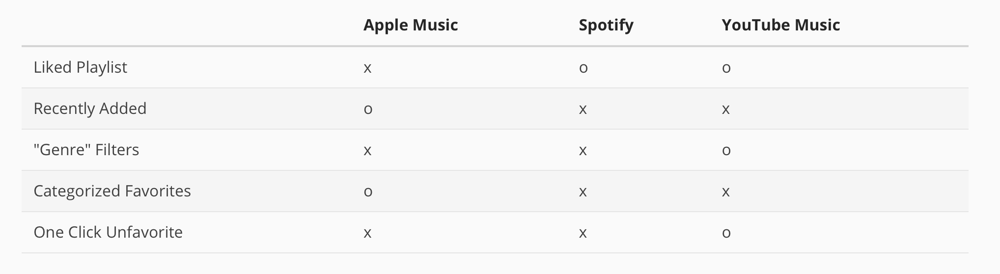

Development
Developing a React Aggregation Page
The goal of this project was for students to attempt building an aggregation tool (in my case, a music favoriting site), through React
This project used React, HTML, and CSS elements to get a working single page applicaiton.
Competitive Analysis
Taking a look at Apple Music, Spotify, and YouTube Music, and in particular their like / add to library mechanisms.
Apple Music: https://music.apple.com/us/home?l=en-US
Spotify https://open.spotify.com/
YouTube Music https://music.youtube.com/
From this, I decided a few important factors that would be ideal to implement.
Firstly, sorting by added date helped me find what I had most recently liked.
Next, multiple ways of organizing (by artist, by album) helped me find songs faster
Then, a big list of all my songs was nice in case I wanted to see them all
Finally, one click for favoriting and unfavoriting made the experience smoother in my usage.
Discussion
The code for the final React App can be found here: https://github.com/joobumjin/cs1300-development
The deployed demo for the site can be found here! https://cs1300-development-npgb2qh9d-joobumjins-projects.vercel.app/
Due to time constraints from personal issues, I ran out of time in developing a second filter.
I also did not really have time to style the website for similar reasons.
However, the primary work I did put in was towards simultaneous filtering/sorting as well as clean aggregation.
Given that this project was meant to be a one page react app, I found it difficult to pre-emptively determine which features might be able to fit on a single page and which might instead look very cluttered or otherwise unusable on just one page. To this end, I struggled with deciding how extra filtering information should show up for a single song's card.
Additionally, I had a lot of considerations and thoughts about data storage. Given that I don't have access to any official backends for popular sites, I wasn't quite sure how I should start designing the data structure in a way that would be both efficient, yet understandable. Ultimately, I decided to use jsons which associate unique song/album ID numbers to their respective song/album. The uniqueness of the IDs was really useful for data aggregation, as I could then design dictionaries (Objects) which used a shared aggregating feature (in my case, albums) as the key, with values being the relevant songs.